VRayPhysicalCamera
This page provides details on how the settings for the V-Ray Physical Camera work.
Overview
The VRayPhysicalCamera uses real-world camera settings such as f-stop, focal length, and shutter speed to set up the virtual CG camera. It also makes it easier to use light sources with real-world illumination, such as VRayLight with physical units or VRaySun and VRaySky.
UI Path: ||Create Menu|| > Cameras > V-Ray > VRayPhysicalCamera
||Create Menu|| > Cameras > V-Ray > VRayPhysicalCamera
You can create a VRayPhysicalCamera by running the following command in the MaxScript Listener:
vrayCreateVRayPhysicalCamera()
||Toolbar|| > Physical Camera button
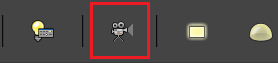
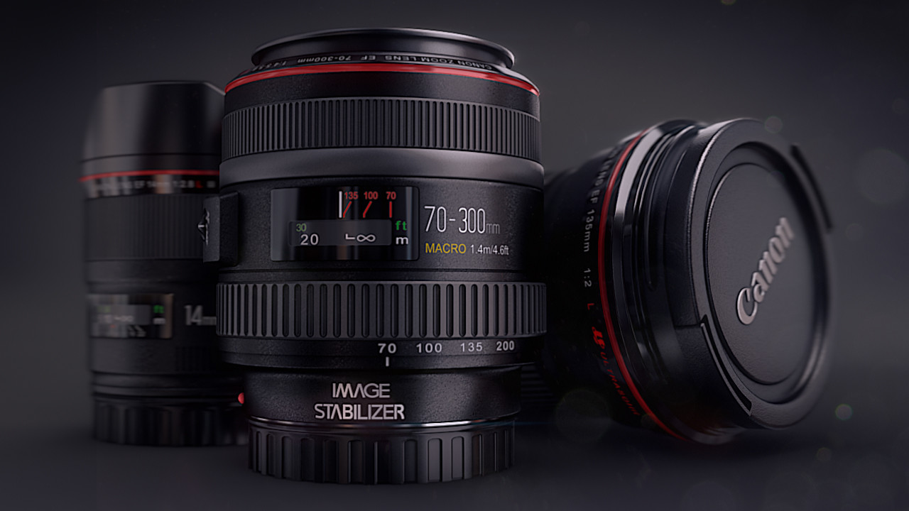
Image courtesy of Ken Vollmer
Basic & Display
Targeted – Specifies whether the camera has a target in the 3ds Max scene or not. If enabled, you can determinate the type of the camera. This mostly has an effect on the motion blur effect produced by the camera.
Still cam – Simulates a still photo camera with a regular shutter.
Movie cam – Simulates a motion-picture camera with a circular shutter.
Video cam – Simulates a shutterless video camera with a CCD matrix.
Target distance – Shows the distance from the camera to the camera target, when Targeted is enabled.
Focus distance – If enabled, specifies the distance at which objects are in focus.
Show cone – Controls whether and when to show a preview of the camera field of view and focus plane.
Selected – Only shows the preview when the camera is selected.
Always – Constantly enables the preview.
Never – Constantly disables the preview.
Show horizon line – When enabled, displays the camera horizon line in the viewport.
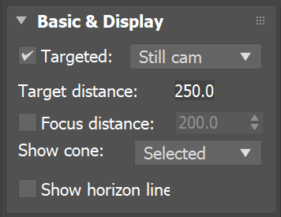
Example: Exposure, Field of View and Focus Distance
The focus distance of the physical camera (as specified by either the Target distance or the Focus distance parameter) affects the exposure of the image and the field of view for the camera, especially if the focus distance is close to the camera. This is an effect that can be observed with real-world cameras as demonstrated in the images below.
The set up is a white board with a small black rectangle and a camera in front of it. Notice how changing the focus distance produces images with different brightness even though the illumination and all other camera parameters are the same in both cases. Also notice the change in the field of view.
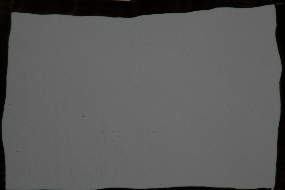
The camera is focused on the white board; the grey color is approximately RGB 104, 104, 104.
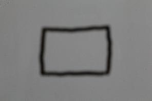
The camera is focused at infinity; the grey color is approximately RGB 135, 135, 135.

Side view of the camera focused on the white board.
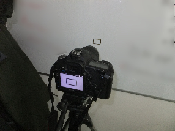
Side view of the camera focused at infinity.
Sensor & Lens
Field of view – When enabled, sets the field of view directly without having to set up the Film gate and Focal length.
Film gate (mm) – Specifies the horizontal size of the film gate in millimeters. Note that this setting takes into account the system units configuration to produce the correct result. Vertical film gate size is calculated by accounting image aspect ratio (vertical film size = horizontal film size / aspect ratio).
Focal length (mm) – Specifies the equivalent focal length of the camera lens. This setting takes into account the system units configuration to produce the correct result.
Zoom factor – Specifies a zoom factor. Values greater than 1.0 zoom into the image; values smaller than 1.0 zoom out. This is similar to a blow-up rendering of the image.
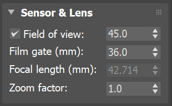
Example: Zoom Factor
This parameter determines the zooming (in and out) of the final image. It doesn't move the camera forward nor backwards.
The following constant settings were used for some parameters: Exposure is set to Physical Exposure mode, F-Number is 4.0, Shutter speed is 8.0, Film speed (ISO) is 100, Vignetting is on, White balance is white.
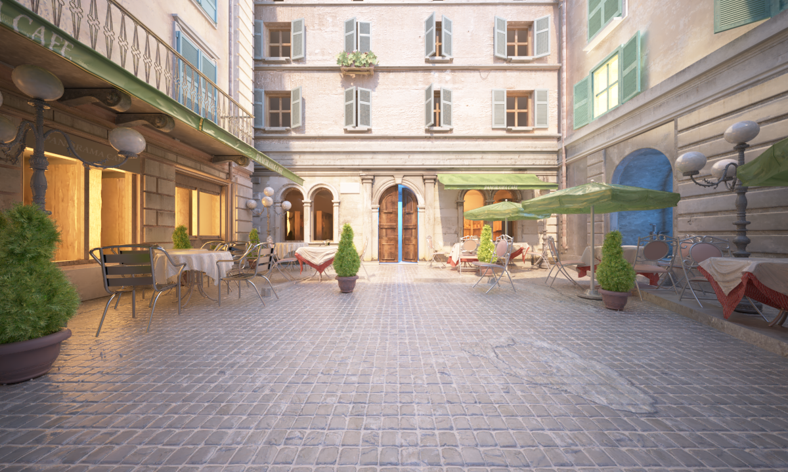
Zoom factor = 0.5
Zoom factor = 1.0
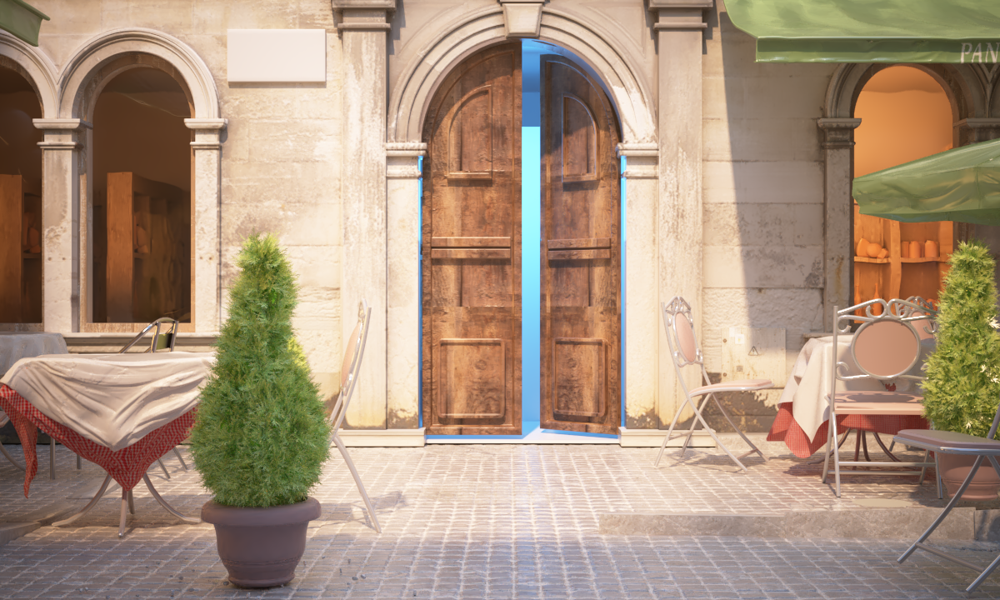
Zoom factor = 2.0
Aperture
Film speed (ISO) – Determines the film power (i.e. sensitivity). Smaller values make the image darker, while larger values make it brighter. For more information, see Exposure Control: Film Speed (ISO) example below.
F-Number – Determines the width of the camera aperture and, indirectly, exposure. If the Exposure option is checked, changing the F-number will affect the image brightness. For more information, see Exposure Control - f-number (s-top) example below.
Shutter speed (s^-1) – Specifies the shutter speed, in inverse seconds, for the still photographic camera. For example, shutter speed of 1/30 s corresponds to a value of 30 for this parameter. For more information, see Exposure Control - Shutter Speed example below.
Shutter angle (deg) – Specifies the shutter angle (in degrees) for the movie camera.
Shutter offset (deg) – Specifies the shutter offset (in degrees) for the movie camera.
Latency (s) – Specifies the CCD matrix latency (in seconds) when the camera mode is set to Video cam.
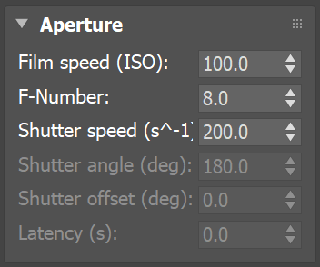
Example: Film Speed (ISO)
The Film speed (ISO) parameter determines the sensitivity of the film and consequently the brightness of the image. If the ISO value is high (film is more sensitive to light), the image is brighter. Lower ISO values mean that the film is less sensitive and produces a darker image.
The images in this example show the effect of changing the Film speed (ISO). The following constant settings were used for some parameters: Exposure is set to Physical Exposure, Shutter speed is 8.0, F-Number is 4.0, Vignetting is on, and White balance is white.
Film speed (ISO) is 50
Film speed (ISO) is 100
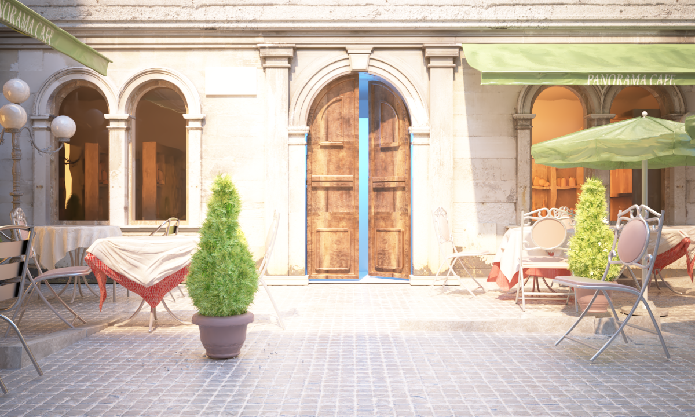
Film speed (ISO) is 200
Example: F-Number (f-stop)
Note: All the images from the following examples are rendered using the VRaySun and VRaySky set with their default parameters.
The F-Number parameter controls the aperture size of the virtual camera. Lowering the F-Number value increases the aperture size and so makes the image brighter since more light enters the camera. In reverse, increasing the F-Number makes the image darker, as the aperture is closed. This parameter also determines the amount of the Depth of Field (DOF) effect. See the Depth of Field Example for more information.
The images in this example show the effect of changing the F-Number. The following constant settings were used for some parameters: Exposure is set to Physical Exposure, Shutter speed is 8.0, Film speed (ISO) is 100, Vignetting is on, White balance is white.
F-Number = 2.8
F-Number = 4.0
F-Number = 5.6
Example: Shutter speed
The Shutter speed parameter determines the exposure time for the virtual camera. The longer this time is (small shutter speed values), the brighter the image would be. In reverse - if the exposure time is shorter (high shutter speed value), the image would get darker. This parameter also affects the motion blur effect, see the Motion Blur Example.
The images in this example show the effect of changing the Shutter speed. The following constant settings were used for some parameters: Exposure is set to Physical Exposure, F-Number is 4.0, Film speed (ISO) is 100, Vignetting is on, and White balance is white.
Shutter speed is 4.0
Shutter speed is 8.0
Shutter speed is 15.0
DoF & Motion blur
Depth of field – Enables the depth of field effect. Note that depth of field depends on the Focus distance and F-Number parameters. For more details, see the Depth of Field examples below.
Motion blur – Enables motion blur. Note that motion blur depends on how fast the objects are moving, as well as the camera's Shutter settings. For more details, see the Motion blur examples below.
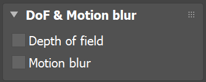
Example: Depth of Field (DoF)
To enable the DoF effect you need to turn on the Depth of field option in the DoF & Motion blur rollout of the physical camera. The effect is most strongly seen when the camera is close to an object, for example when doing a macro photo. For a strong DoF effect, the camera aperture must be open wide (i.e. small F-Number value). That may lead to a very burnt and bright image, so to preserve the same illuminosity over the whole image, the shutter speed must be shortened. And last but not least, the Focus distance determines which part of the scene will be actually on focus. To get the focus near, you would need a small value and reverse - higher value for far focus.
For the images in this example, the following constant settings were used for some parameters: Exposure is set to Exposure Value, F-Number is 1.0, EV is 7.0, Shutter speed is 125, Vignetting is off.
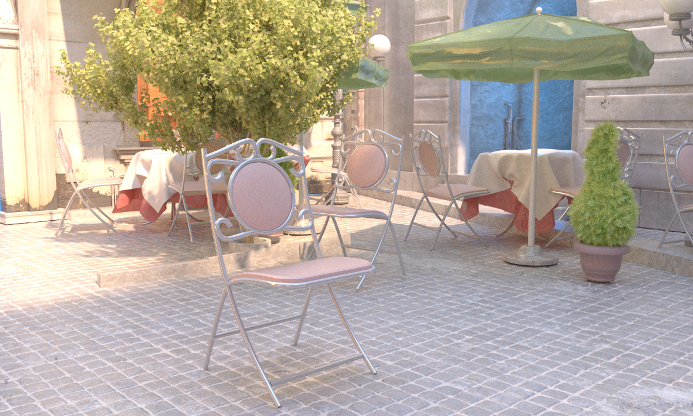
Depth of field is off
Depth of field is on, Focus distance is 3 m
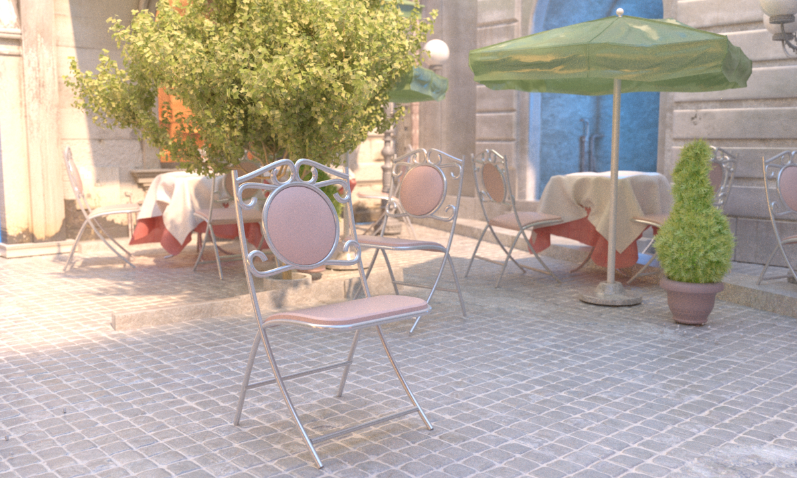
Depth of field is on, Focus distance is 5 m
Example: Motion blur (MB)
To enable the motion blur effect, you need to enable the Motion blur option in the DoF & Motion blur rollout of the physical camera. The amount of motion blur is determined by the speed of the moving object itself as well as the Shutter speed setting of the camera. Long shutter speeds will produce more motion blur, as the movement of the object is tracked over a longer time. In reverse, short shutter speeds will produce less motion blur.
In this example, the falling roof tiles are moving faster than the flower pot, which causes the difference in the motion blur effect.
For the images in this example, the following constant settings were used for some parameters: Exposure is set to Exposure Value, EV is set to 7 and Vignetting is on.
Motion blur is off
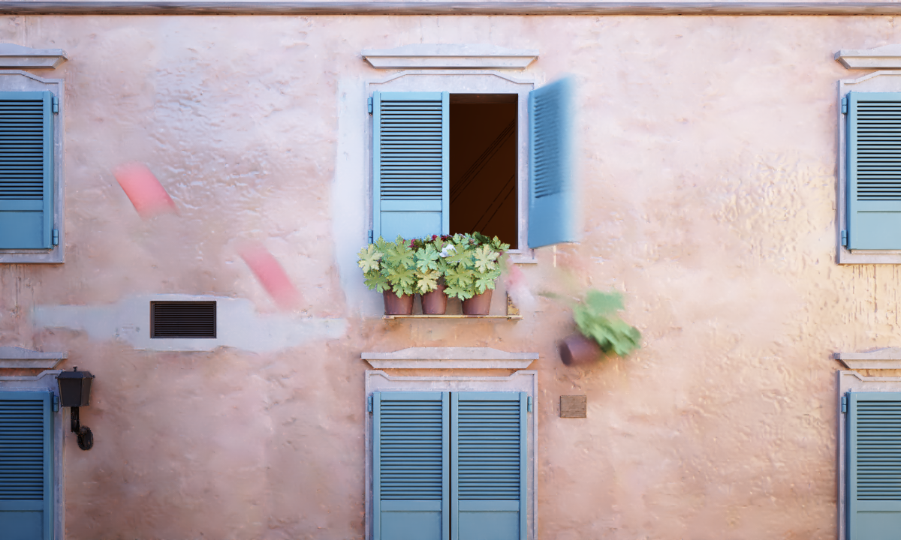
Motion blur is on, F-Number is 8.0, Shutter speed is 20.0
Motion blur is on, F-Number is 8.0, Shutter speed is 40.0
Color & Exposure
Exposure – Specifies how the F-number, Shutter speed, and Film speed (ISO) settings affect the image brightness. For more information, see Exposure, Field of View and Focus Distance example above.
No Exposure – Shutter speed, F-number and ISO settings do not affect the image brightness;
Physical Exposure – Image brightness is controlled by the Shutter speed, F-number and ISO;
Exposure Value (EV) – Uses the Exposure value to control image brightness. Grays out the ISO parameter and uses Shutter speed and F-number values only for Motion Blur and Depth of field respectively.
Exposure value – Controls the exposure value when the Exposure Value (EV) option is selected.
Vignetting – When enabled, simulates the optical vignetting effect of real-world cameras. The strength of the vignetting effect can be specified, where 0.0 is no vignetting and 1.0 is normal vignetting. For more information, see Vignetting example below.
White balance – Allows additional modification of the image output. Objects in the scene that have the specified color will appear white in the image. Note that only the color hue is taken into consideration; the brightness of the color is ignored. There are several presets that can be used, most notably the Daylight preset for exterior scenes. For more information, see White Balance example below.
Custom balance – Specifies custom white balance.
Temperature (K) – Specifies the temperature (in Kelvins) when White balance is set to Temperature.
The Exposure value option is connected to the F-number, Shutter speed, and ISO. When Exposure Value (EV) mode is selected, changing the Exposure value automatically shows the correct ISO value which is greyed out. When Physical Exposure mode is selected, changing the value of ISO, F-number, or Shutter speed automatically shows the corrected Exposure value which is greyed out.
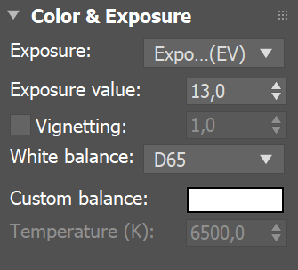
Example: Vignetting
This parameter control the optical vignetting effect of real-world cameras.
off1
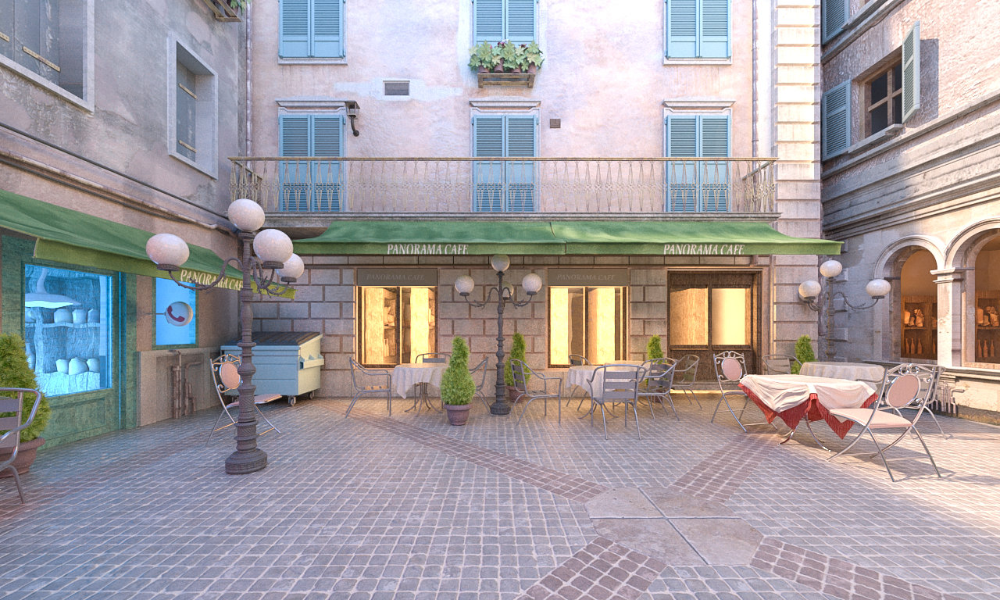
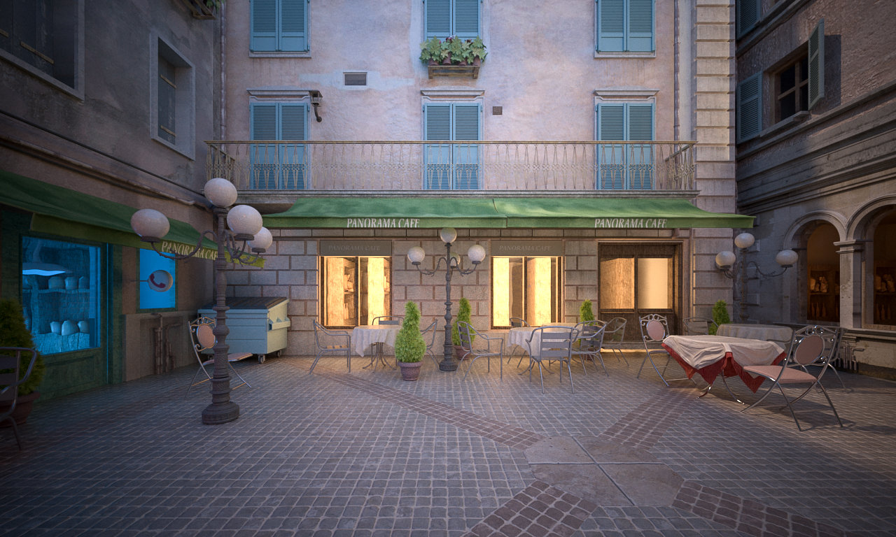
Example: White balance
Using the White balance color allows additional modification of the image output. Objects in the scene that have the specified color will appear white in the image. E.g. for daylight scenes this should be peach color to compensate for the color of the sun light etc.
The images in this example show the effect of changing the White balance. The following constant settings were used for some parameters: Exposure is set to Physical Exposure, F-Number is 8.0, Shutter speed is 200.0, Film speed (ISO) is 200.0, and Vignetting is off.
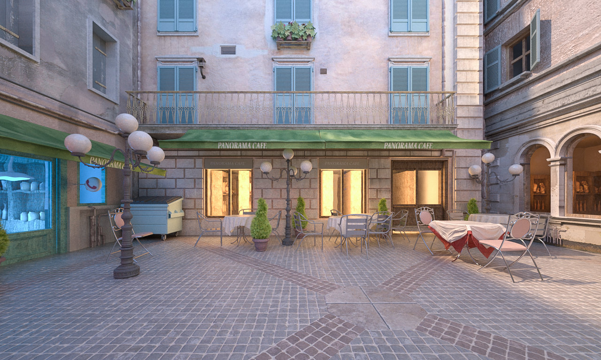
White balance is white (255, 255, 255)
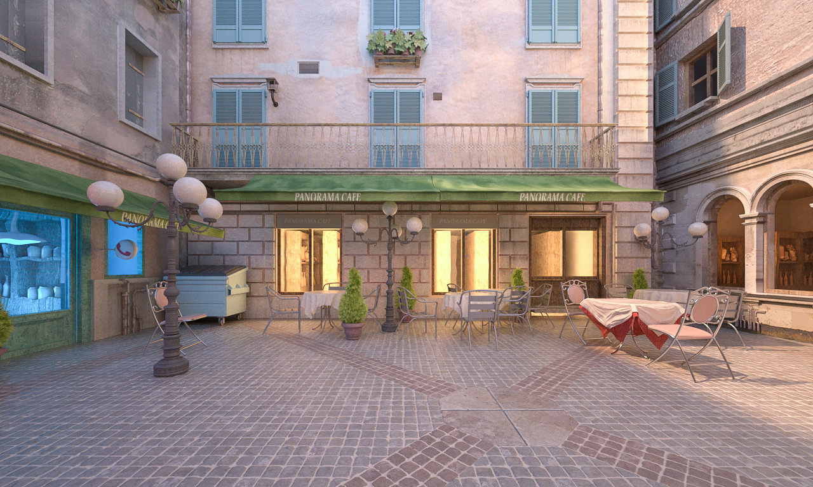
White balance is blueish (196, 226, 255)
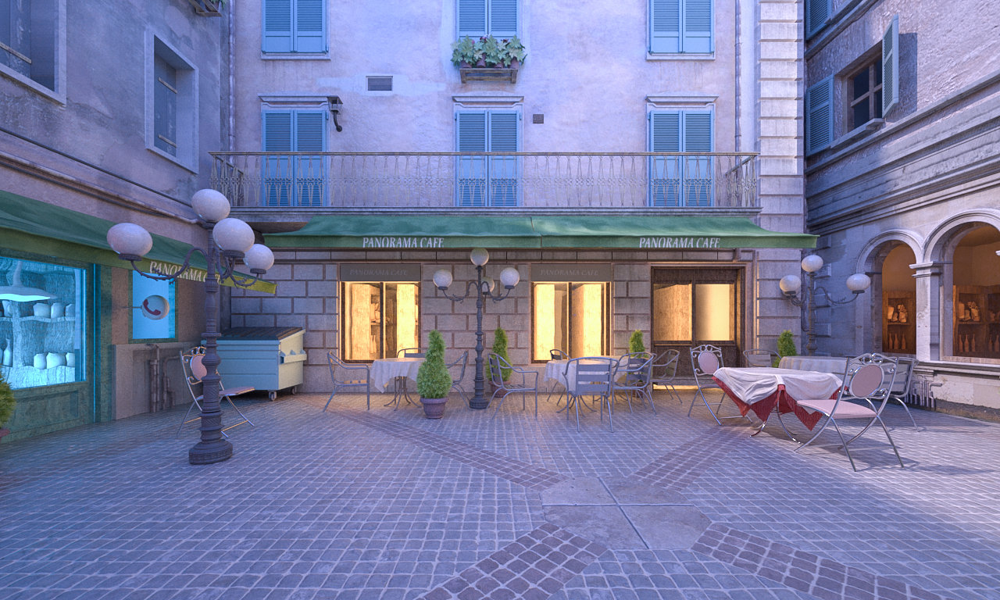
White balance is warmer (240, 200, 114)
Tilt & Shift
Automatic vertical tilt – When enabled, preserves the vertical tilt when the camera is being animated.
Vertical Tilt – Vertical tilt that allows the simulation of tilt lenses for 2-point perspective.
Horizontal tilt – Horizontal tilt that allows the simulation of tilt lenses for 2-point perspective. Changing these parameters is similar to applying a camera correction modifier.
Horizontal shift – Horizontally offsets the camera field of view as a fraction of the current view. For example, a value of 0.5 will offset the camera one-half of the current image width to the left.
Vertical shift – Vertically offsets the camera field of view as a fraction of the current view. For example, a value of 0.5 will offset the camera one-half of the current image height upwards.
Use the Guess vert tilt and Guess horiz tilt buttons to achieve 2-point perspective. For more information, see the examples below.
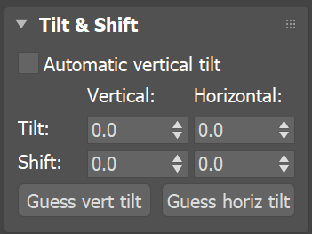
Example: Vertical tilt
Using this parameter, you can achieve 2-point perspective. To have that done automatically, use the Guess vert tilt button.
Vertical tilt = Guess (2 point)

Vertical tilt = -0.5

Vertical tilt = 0.5
Example: Horizontal tilt
Using this parameter, you can achieve 2-point perspective. To have that done automatically, use the Guess horiz tilt button.
Horizontal tilt = 0

Horizontal tilt = -0.5

Horizontal tilt = 0.5
Example: Horizontal shift
Using this parameter, you can offset the camera field of view.
0.2-0.2


Example: Vertical shift
Using this parameter, you can offset the camera field of view.
0.2-0.2


Bokeh Effects
These parameters control the bokeh effects when Depth-of-field is enabled.
Blades – Defines the shape of the camera aperture. When disabled, a perfectly circular aperture is simulated. When enabled, a polygonal aperture is simulated, with the specified number of blades.
Rotation (deg) – Defines the rotation of the blades in degrees.
Center bias – Defines a bias shape for the bokeh effects. Positive values make the outer edge of the bokeh effects brighter; negative values make the center of the effect brighter.
Anisotropy – Allows stretching of the bokeh effect horizontally or vertically to simulate anamorphic lenses. If you want the ratio of height to width of the bokeh to be k:1, then the value for anisotropy should be sqrt(1/k)-1. For example, for anamorphic bokeh, which is 2.39:1, the anisotropy value should be -0.353.
Optical vignetting – Controls the strength of the optical vignetting, also known as cat's eye vignetting. This effect is due to the fact that the shape of the bokeh highlights resembles the shape of the aperture. As the distance to the optical axis increases, the bokeh highlights are progressively narrowed and begin to resemble the shape of a cat's eye. The larger the distance from the image center, the narrower the cat's eye becomes. Optical vignetting tends to be stronger in wide angle lenses and large aperture lenses, but the effect can be noticed with most photographic lenses.
Optical vignetting is currently very slow to calculate; it may introduce noise in the image that is difficult to clean.
Bitmap aperture – Enables the use of an image (specified in the field below) to control the aperture shape as well as any dirt or scratches that may affect the bokeh. White signifies transparent areas and black signifies opaque areas.
Affect exposure – When enabled, the bokeh effects will affect the overall exposure of the image.
Bitmap resolution – Specifies the resolution at which the texture will be sampled when calculating the bokeh effects.
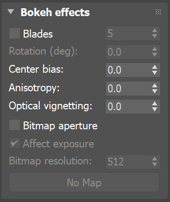
Distortion
The options in this roll-out control the lens distortion of the camera.
Distortion type – Specifies how the distortion is determined.
Quadratic – The default distortion type. It uses a simplified formula that is easier to calculate than the Cubic method.
Cubic – Used in some camera tracking programs like SynthEyes, Boujou, etc. If you plan on using one of these programs, this distortion type should be used.
Lens file – Uses a .lens file generated with the V-Ray Lens Analysis tool and specified in the Lens file field.
Texture – Uses a texture file generated in a third party application (i.e. Nuke) and specified in the distortion map field.
Currently Lens file distortion type is not supported with V-Ray GPU.
Amount – Specifies the distortion coefficient for the camera lens when the Distortion type is set to either Quadratic or Cubic. A value of 0.0 means no distortion; positive values produce "barrel" distortion, while negative values produce "pillow" distortion. For more information, see The Distortion example below.
Lens file – When Distortion type is set to Lens file, this slot specifies the lens file, containing distortion data.
Map – When Distortion type is set to Texture, this slot specifies the map that contains the distortion data.
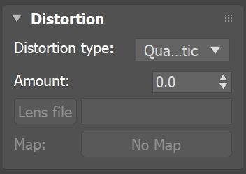
Example: Distortion
The difference between the Cubic and Quadratic types of distortion is slightly visible. The Cubic type should be used in some camera tracking programs like SynthEyes, Boujou, etc.
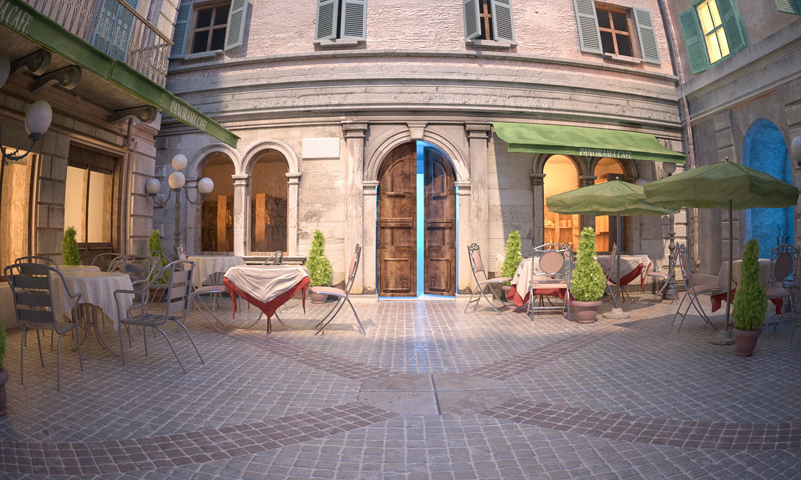
Distortion Amount is 1.0, Distortion type is Quadratic
Distortion Amount is -1.0, Distortion type is Quadratic
Distortion Amount is 1.0, Distortion type is Cubic
Distortion Amount is -1.0, Distortion type is Cubic
Similar effects like those of the Cubic and Quadratic distortion types can be achieved with the help of a UV map. The map must be generated via a third party plugin (i.e. Nuke) or via the V-Ray Lens Analyzer tool. For a more accurate result, we recommend that you save your UV map as 32bit exr.
In the Distortion rollout of the camera parameters, set the Distortion type to Texture and link a UV map in the Map slot.
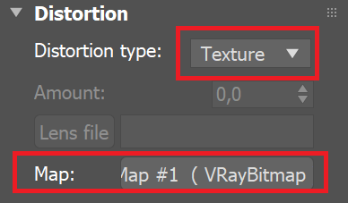
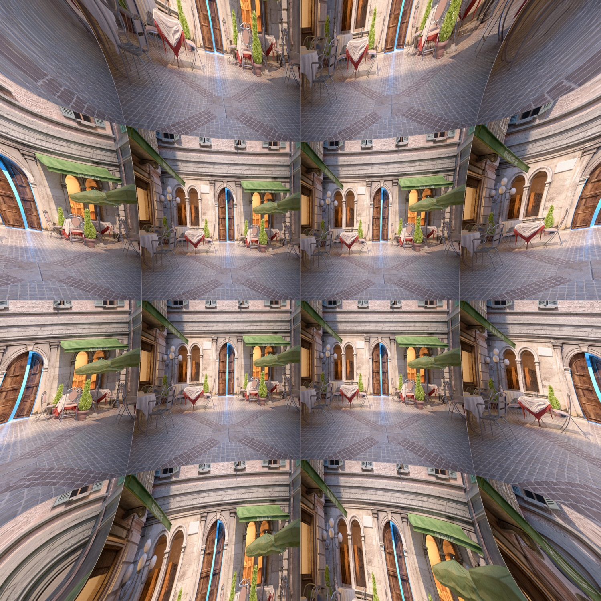
Resulted render
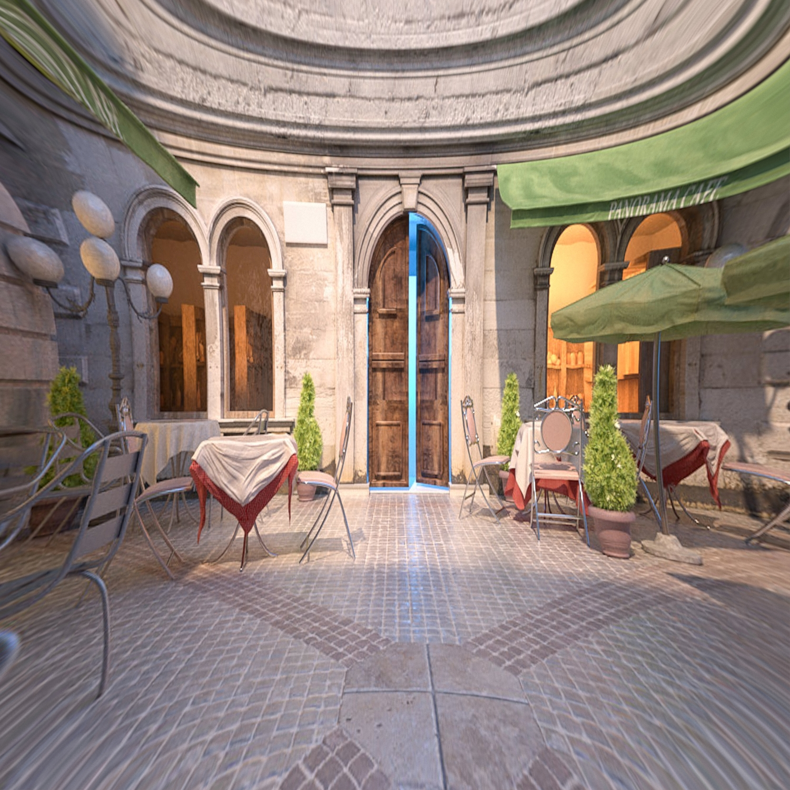
Resulted render
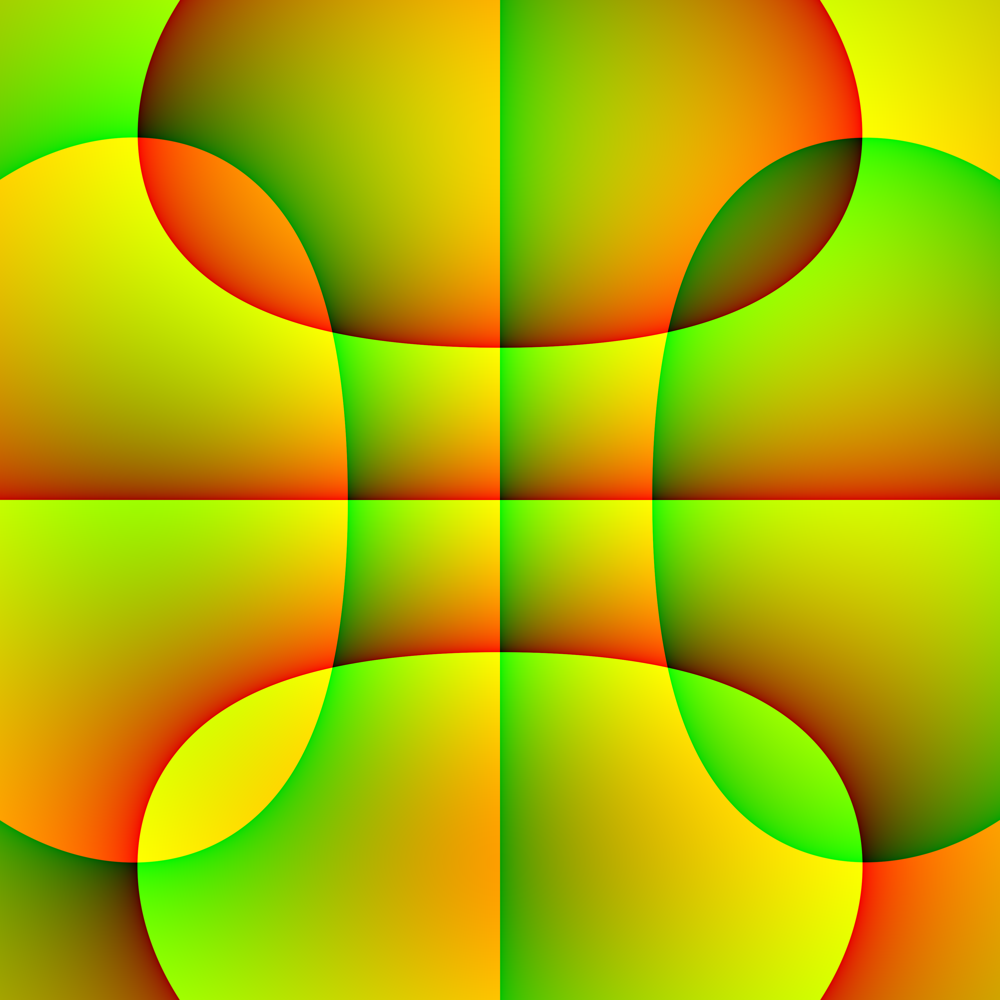
UV distortion map
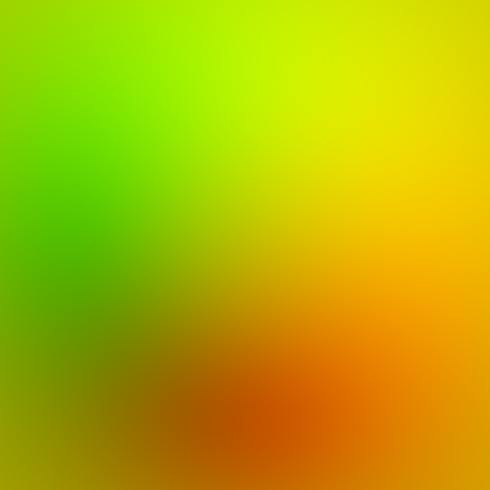
UV distortion map
Clipping & Environment
These parameters control various additional aspects of the camera.
Clipping – When enabled, turns on the camera clipping.
Near/Far clipping plane – Specifies the near/far clipping range when Clipping is enabled.
Near/Far environment range – Specifies the near/far environment range (used by some atmospheric effects in 3ds Max).
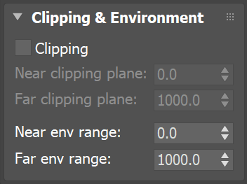
Rolling Shutter
The Rolling shutter rollout becomes available if Motion Blur option is enabled.
Mode – Specifies whether the rolling shutter effect is enabled as well as the direction of the shutter.
Disabled
Top to bottom
Bottom to top
Left to right
Right to left
Duration (s^-1) – The time for the shutter to pass through the image in 1/seconds.
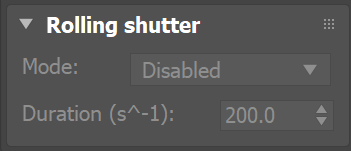
Example: Rolling Shutter Effect
The example below shows a capture of a plane propeller spinning. The first image has motion blur applied and the rolling shutter effect is turned off. The second image shows the rolling shutter effect enabled (Top to bottom).
OffOn
Camera Shader
Enabled – When enabled, a custom camera type can be applied using the texture slot, e.g. a fish-eye camera or a custom-made camera.
Texture slot – A slot for a camera shader. It works only with the VRayOSLTex.
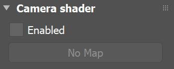
Notes
-
The Camera correction modifier will not work with the VRayPhysicalCamera. Instead, use the Vertical tilt parameter of the camera for the same purpose.
-
There are three types of FoV (field of view): horizontal, vertical, and diagonal. Horizontal FoV depends on the film gate size, focal length, focus distance, and zoom factor. In addition to those four parameters, the vertical and diagonal FoV depend on the image aspect ratio. The VRayPhysicalCamera always uses horizontal FOV.
-
The DOF settings in the Render Scene dialogue have no effect when the VRayPhysicalCamera is used. Instead, you must use the DoF settings of the camera itself.
-
Some motion blur settings (Duration, etc.) have no effect on the VRayPhysicalCamera. Instead, motion blur is controlled by the camera itself (through the Shutter speed, etc. parameters). See also the Motion blur render parameters.